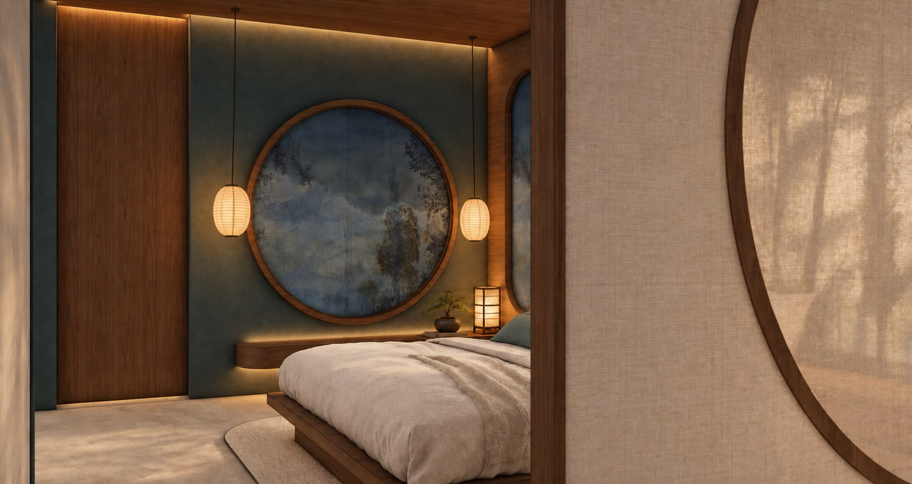

Courtyard House
Interior architecture


Studio
Each project begins with the people who will experience it. A glimpse into a courtyard, the curve of a screen or the movement of a stage set can become the detail they remember.
all projects



About us
Founded by interior architect Christina García, whose European roots, Latina heritage and love of Asian culture shape the way she thinks about space.
start a project